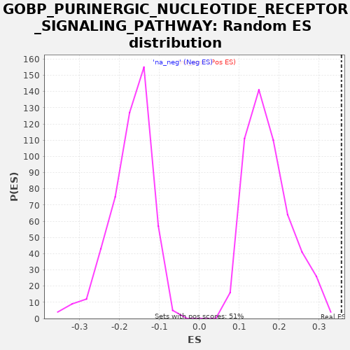

| | | Dataset | A_X_tradeoff |
| Phenotype | NoPhenotypeAvailable |
| Upregulated in class | na_pos |
| GeneSet | GOBP_PURINERGIC_NUCLEOTIDE_RECEPTOR_SIGNALING_PATHWAY |
| Enrichment Score (ES) | 0.35665548 |
| Normalized Enrichment Score (NES) | 2.060222 |
| Nominal p-value | 0.0 |
| FDR q-value | 0.2158593 |
| FWER p-Value | 0.996 |
Table: GSEA Results Summary
 Fig 1: Enrichment plot: GOBP_PURINERGIC_NUCLEOTIDE_RECEPTOR_SIGNALING_PATHWAY
Fig 1: Enrichment plot: GOBP_PURINERGIC_NUCLEOTIDE_RECEPTOR_SIGNALING_PATHWAY
Profile of the Running ES Score & Positions of GeneSet Members on the Rank Ordered List
| SYMBOL | RANK IN GENE LIST | RANK METRIC SCORE | RUNNING ES | CORE ENRICHMENT | | 1 | GPR171 | 218 | -0.001 | 0.0304 | Yes |
| 2 | GNAT1 | 228 | -0.001 | 0.0716 | Yes |
| 3 | P2RY2 | 568 | -0.003 | 0.0959 | Yes |
| 4 | P2RX7 | 769 | -0.004 | 0.1272 | Yes |
| 5 | P2RX5 | 1656 | -0.009 | 0.1233 | Yes |
| 6 | ADORA1 | 1867 | -0.010 | 0.1542 | Yes |
| 7 | P2RY1 | 2335 | -0.013 | 0.1718 | Yes |
| 8 | GPR34 | 2457 | -0.014 | 0.2072 | Yes |
| 9 | P2RX3 | 2509 | -0.014 | 0.2463 | Yes |
| 10 | P2RX6 | 3421 | -0.020 | 0.2411 | Yes |
| 11 | ADORA2B | 5044 | -0.034 | 0.1992 | Yes |
| 12 | ADORA2A | 6303 | -0.049 | 0.1762 | Yes |
| 13 | P2RY13 | 6599 | -0.053 | 0.2026 | Yes |
| 14 | ADA | 7815 | -0.070 | 0.1818 | Yes |
| 15 | ADCY5 | 8405 | -0.080 | 0.1931 | Yes |
| 16 | GNAI2 | 8667 | -0.084 | 0.2214 | Yes |
| 17 | P2RX1 | 8722 | -0.085 | 0.2602 | Yes |
| 18 | P2RX2 | 9446 | -0.098 | 0.2647 | Yes |
| 19 | P2RY14 | 10211 | -0.113 | 0.2670 | Yes |
| 20 | NECAB2 | 10911 | -0.130 | 0.2727 | Yes |
| 21 | PTAFR | 11253 | -0.138 | 0.2968 | Yes |
| 22 | ANO6 | 11294 | -0.139 | 0.3365 | Yes |
| 23 | P2RX4 | 11712 | -0.150 | 0.3567 | Yes |
| 24 | P2RY6 | 14347 | -0.230 | 0.2628 | No |
Table: GSEA details [plain text format]

Fig 2: GOBP_PURINERGIC_NUCLEOTIDE_RECEPTOR_SIGNALING_PATHWAY: Random ES distribution
Gene set null distribution of ES for GOBP_PURINERGIC_NUCLEOTIDE_RECEPTOR_SIGNALING_PATHWAY